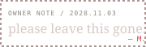

◫AFTERIMAGE
1 viewer left in archive 00:00:00
ARCHIVE NODE 17 // OWNER: M. // RECOVERED 2049.09.19
She asked me to wait.
I didn't.
Three photos, two messages, one platform. It kept what I tried to delete.
fragment_01.photosintegrity 82%
00:14 are you still at north exit?
00:16 left. train came. sorry.
--:-- Mara is typing…
REC_2028-11-02_0017_platform3.wav
00:00
DELETION REQUESTED 2028.11.03
THIS PART I ASKED
TO STAY DELETED. — M.
margin recovered 2049-09-19 — “if you can read this, you are the backup. keep one small thing.”